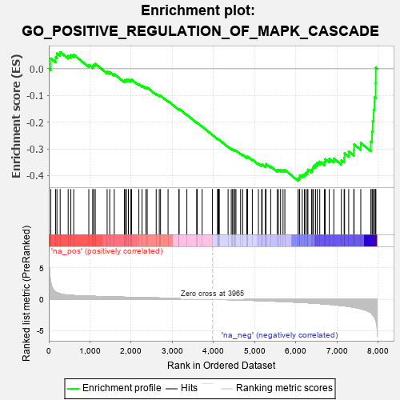
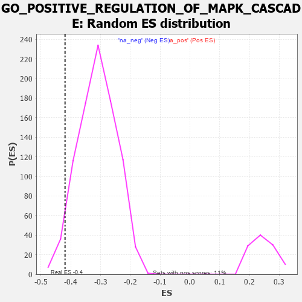

| | | Dataset | 7d |
| Phenotype | NoPhenotypeAvailable |
| Upregulated in class | na_neg |
| GeneSet | GO_POSITIVE_REGULATION_OF_MAPK_CASCADE |
| Enrichment Score (ES) | -0.41940093 |
| Normalized Enrichment Score (NES) | -1.3502656 |
| Nominal p-value | 0.034792367 |
| FDR q-value | 0.40272325 |
| FWER p-Value | 1.0 |
Table: GSEA Results Summary

Fig 1: Enrichment plot: GO_POSITIVE_REGULATION_OF_MAPK_CASCADE
Profile of the Running ES Score & Positions of GeneSet Members on the Rank Ordered List
| PROBE | GENE SYMBOL | GENE_TITLE | RANK IN GENE LIST | RANK METRIC SCORE | RUNNING ES | CORE ENRICHMENT | | 1 | TGFB3 | | | 49 | 2.654 | 0.0386 | No |
| 2 | AXIN1 | | | 166 | 1.159 | 0.0435 | No |
| 3 | WNT16 | | | 198 | 1.072 | 0.0576 | No |
| 4 | HGF | | | 276 | 0.870 | 0.0626 | No |
| 5 | LRP1 | | | 470 | 0.648 | 0.0490 | No |
| 6 | PKN1 | | | 535 | 0.619 | 0.0513 | No |
| 7 | DHX33 | | | 605 | 0.593 | 0.0526 | No |
| 8 | DVL3 | | | 971 | 0.490 | 0.0145 | No |
| 9 | FZD10 | | | 1065 | 0.470 | 0.0106 | No |
| 10 | CDK10 | | | 1092 | 0.465 | 0.0152 | No |
| 11 | SRC | | | 1128 | 0.459 | 0.0185 | No |
| 12 | P2RY1 | | | 1416 | 0.407 | -0.0111 | No |
| 13 | TIMP2 | | | 1478 | 0.394 | -0.0122 | No |
| 14 | ERP29 | | | 1589 | 0.376 | -0.0198 | No |
| 15 | GATA4 | | | 1837 | 0.330 | -0.0456 | No |
| 16 | TRIM5 | | | 1852 | 0.327 | -0.0418 | No |
| 17 | PAK3 | | | 1889 | 0.322 | -0.0410 | No |
| 18 | HACD3 | | | 1932 | 0.315 | -0.0410 | No |
| 19 | ROR1 | | | 1993 | 0.306 | -0.0434 | No |
| 20 | RAF1 | | | 2011 | 0.303 | -0.0405 | No |
| 21 | SYK | | | 2186 | 0.278 | -0.0579 | No |
| 22 | SHC2 | | | 2263 | 0.266 | -0.0630 | No |
| 23 | MIF | | | 2357 | 0.252 | -0.0706 | No |
| 24 | HIPK2 | | | 2389 | 0.247 | -0.0703 | No |
| 25 | EMC10 | | | 2607 | 0.211 | -0.0943 | No |
| 26 | SASH1 | | | 2682 | 0.201 | -0.1003 | No |
| 27 | PHB2 | | | 2712 | 0.197 | -0.1007 | No |
| 28 | FGFR2 | | | 2895 | 0.167 | -0.1210 | No |
| 29 | ERN2 | | | 3160 | 0.129 | -0.1523 | No |
| 30 | GCNT2 | | | 3162 | 0.128 | -0.1503 | No |
| 31 | TAB1 | | | 3351 | 0.097 | -0.1725 | No |
| 32 | MAPK3 | | | 3589 | 0.062 | -0.2016 | No |
| 33 | STK25 | | | 3602 | 0.059 | -0.2021 | No |
| 34 | DAXX | | | 3722 | 0.038 | -0.2166 | No |
| 35 | IGF1R | | | 3970 | -0.002 | -0.2479 | No |
| 36 | PDE8A | | | 4097 | -0.023 | -0.2635 | No |
| 37 | TRAF1 | | | 4104 | -0.024 | -0.2639 | No |
| 38 | ABL1 | | | 4125 | -0.027 | -0.2660 | No |
| 39 | PLCE1 | | | 4127 | -0.028 | -0.2656 | No |
| 40 | CRK | | | 4139 | -0.031 | -0.2665 | No |
| 41 | ADRB2 | | | 4352 | -0.068 | -0.2923 | No |
| 42 | MYDGF | | | 4429 | -0.081 | -0.3005 | No |
| 43 | ERCC6 | | | 4464 | -0.087 | -0.3034 | No |
| 44 | LRRK2 | | | 4467 | -0.087 | -0.3022 | No |
| 45 | ILK | | | 4510 | -0.096 | -0.3059 | No |
| 46 | NPTN | | | 4519 | -0.098 | -0.3052 | No |
| 47 | NTRK2 | | | 4543 | -0.104 | -0.3064 | No |
| 48 | FGFR3 | | | 4656 | -0.129 | -0.3184 | No |
| 49 | RAP1B | | | 4706 | -0.140 | -0.3223 | No |
| 50 | TNIK | | | 4804 | -0.158 | -0.3319 | No |
| 51 | FBXW7 | | | 4816 | -0.161 | -0.3306 | No |
| 52 | TAOK3 | | | 4823 | -0.162 | -0.3286 | No |
| 53 | FZD4 | | | 4940 | -0.186 | -0.3402 | No |
| 54 | DRD2 | | | 5088 | -0.221 | -0.3551 | No |
| 55 | TBX1 | | | 5166 | -0.241 | -0.3608 | No |
| 56 | NEK10 | | | 5180 | -0.244 | -0.3584 | No |
| 57 | PTEN | | | 5262 | -0.261 | -0.3643 | No |
| 58 | CDK1 | | | 5264 | -0.262 | -0.3600 | No |
| 59 | EPHA4 | | | 5273 | -0.265 | -0.3565 | No |
| 60 | FZD5 | | | 5386 | -0.292 | -0.3658 | No |
| 61 | FGFR1 | | | 5543 | -0.332 | -0.3800 | No |
| 62 | SPHK1 | | | 5576 | -0.339 | -0.3783 | No |
| 63 | ROR2 | | | 5626 | -0.353 | -0.3786 | No |
| 64 | MADD | | | 5686 | -0.371 | -0.3798 | No |
| 65 | CALCR | | | 5730 | -0.386 | -0.3788 | No |
| 66 | FZD8 | | | 6051 | -0.490 | -0.4111 | Yes |
| 67 | DBNL | | | 6084 | -0.501 | -0.4067 | Yes |
| 68 | UBB | | | 6090 | -0.503 | -0.3989 | Yes |
| 69 | ROCK1 | | | 6152 | -0.520 | -0.3979 | Yes |
| 70 | INSR | | | 6204 | -0.538 | -0.3952 | Yes |
| 71 | CDC42 | | | 6236 | -0.548 | -0.3899 | Yes |
| 72 | STK39 | | | 6274 | -0.563 | -0.3851 | Yes |
| 73 | TRAF7 | | | 6290 | -0.571 | -0.3774 | Yes |
| 74 | CDON | | | 6378 | -0.607 | -0.3782 | Yes |
| 75 | UBE2N | | | 6407 | -0.621 | -0.3712 | Yes |
| 76 | CSK | | | 6428 | -0.630 | -0.3631 | Yes |
| 77 | SOX2 | | | 6477 | -0.652 | -0.3582 | Yes |
| 78 | TRPV4 | | | 6515 | -0.668 | -0.3516 | Yes |
| 79 | ROBO1 | | | 6577 | -0.699 | -0.3476 | Yes |
| 80 | PAK1 | | | 6691 | -0.757 | -0.3491 | Yes |
| 81 | EGFR | | | 6708 | -0.765 | -0.3383 | Yes |
| 82 | ADAM9 | | | 6808 | -0.819 | -0.3370 | Yes |
| 83 | CSPG4 | | | 6918 | -0.878 | -0.3360 | Yes |
| 84 | RYK | | | 7102 | -1.000 | -0.3424 | Yes |
| 85 | AR | | | 7169 | -1.046 | -0.3331 | Yes |
| 86 | PTPRJ | | | 7180 | -1.054 | -0.3165 | Yes |
| 87 | CIB1 | | | 7280 | -1.152 | -0.3096 | Yes |
| 88 | GRM1 | | | 7404 | -1.272 | -0.3038 | Yes |
| 89 | UBC | | | 7410 | -1.274 | -0.2829 | Yes |
| 90 | TRAF4 | | | 7573 | -1.514 | -0.2779 | Yes |
| 91 | TRAF6 | | | 7818 | -2.157 | -0.2725 | Yes |
| 92 | GRM4 | | | 7847 | -2.393 | -0.2356 | Yes |
| 93 | TRAF2 | | | 7861 | -2.481 | -0.1953 | Yes |
| 94 | TRAF3 | | | 7886 | -2.695 | -0.1529 | Yes |
| 95 | PLCB1 | | | 7904 | -2.841 | -0.1070 | Yes |
| 96 | ARRB1 | | | 7935 | -3.377 | -0.0538 | Yes |
| 97 | TRAF5 | | | 7938 | -3.448 | 0.0042 | Yes |
Table: GSEA details [plain text format]

Fig 2: GO_POSITIVE_REGULATION_OF_MAPK_CASCADE: Random ES distribution
Gene set null distribution of ES for GO_POSITIVE_REGULATION_OF_MAPK_CASCADE